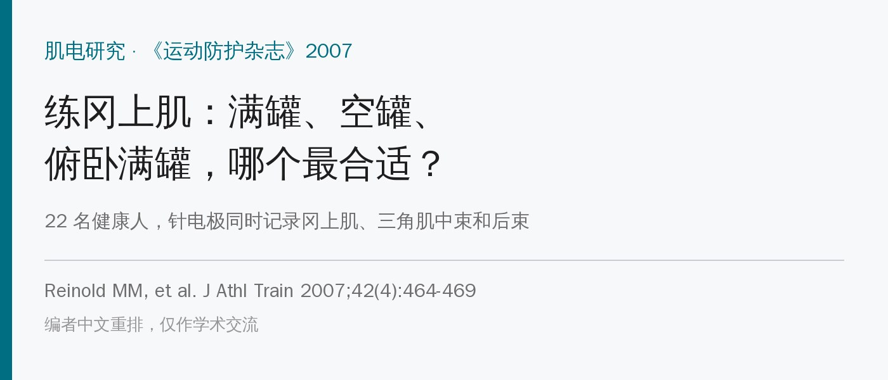
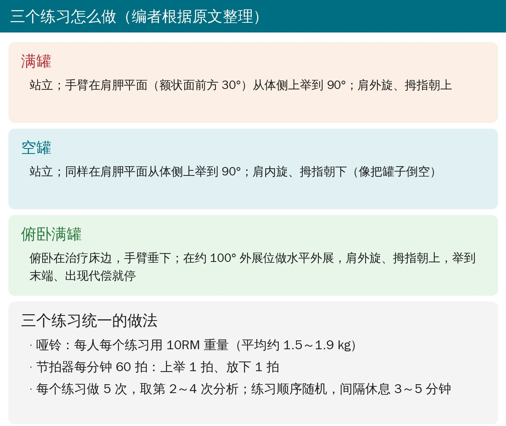
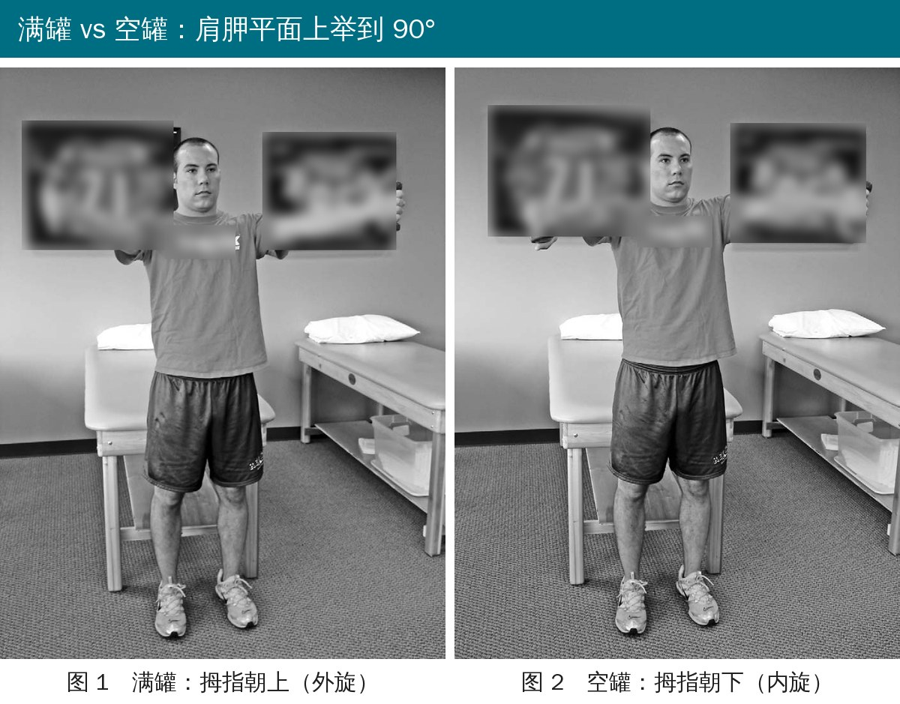
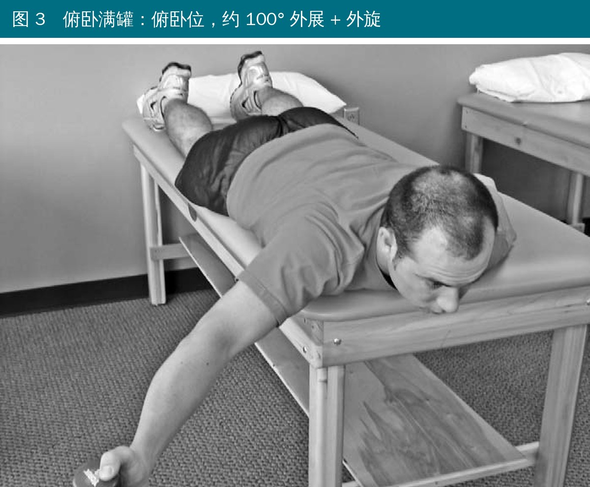
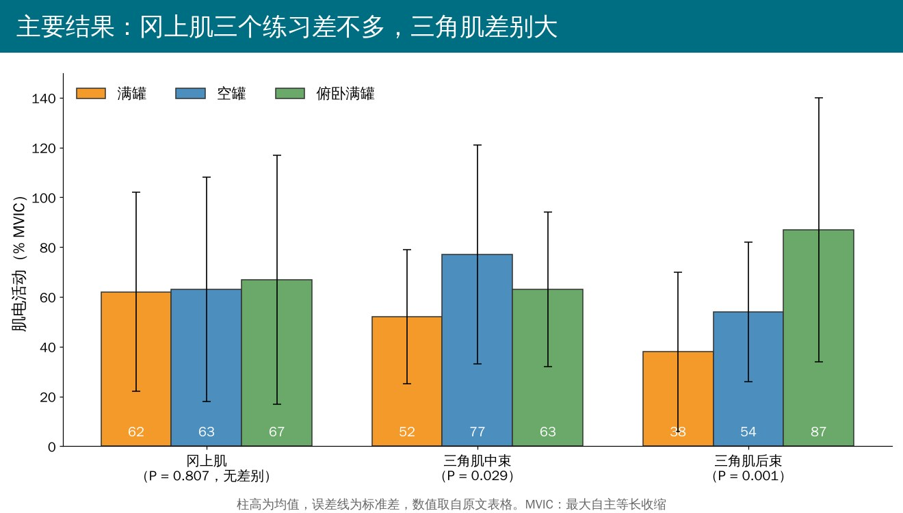
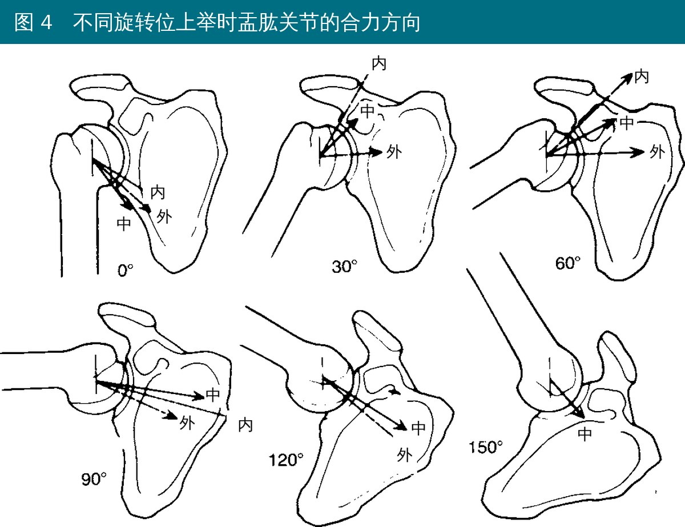
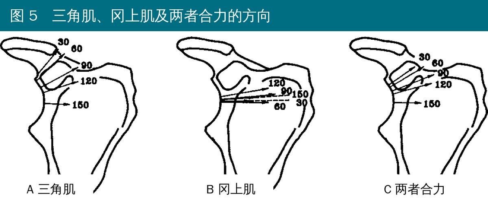

🔖原文信息（编者中文重排）
📚 文献信息
▪ Reinold MM, Macrina LC, Wilk KE, Fleisig GS, Dun S, Barrentine SW, Ellerbusch MT, Andrews JR. Electromyographic analysis of the supraspinatus and deltoid muscles during 3 common rehabilitation exercises. J Athl Train. 2007;42(4):464-469.
▪ 作者来自波士顿红袜队、美国运动医学研究所（ASMI）等，Wilk、Andrews 都是肩关节康复领域的老牌名字
▪ 实验室重复测量研究（同一批人做三个练习）
肩袖的工作是把肱骨头“摁”在关节盂里，抵消三角肌往上拉的力。冈上肌受伤或无力，肱骨头就容易往上跑，撞到肩峰。所以练冈上肌几乎是所有肩关节康复方案的标配。
但到底用哪个动作练，一直有争论：
• 空罐：Jobe 最早推荐，肩胛平面上举 + 内旋（拇指朝下），像把罐子里的水倒空
• 满罐：肩胛平面上举 + 外旋（拇指朝上），不少作者认为更好
• 俯卧满罐：Blackburn 报告俯卧位外展 100° 外旋做水平外展时冈上肌激活更高
以往研究要么没把三个都比，要么没看三角肌，要么没做统计。作者认为理想的冈上肌练习，应该是冈上肌激活够高、同时三角肌激活尽量低，于是用针电极把三个练习放在一起比。
• 对象：22 名健康人（男 15、女 7，平均 26.7 岁），都没有肩痛、肩伤或不稳的病史；测优势侧
• 用细钢丝针电极插进冈上肌、三角肌中束、三角肌后束（冈上肌在肩胛冈中点上方 1.5 cm 进针，直达冈上窝）
• 先测每块肌肉的最大自主等长收缩（MVIC），练习时的肌电峰值用 MVIC 的百分比表示
• 三个练习随机顺序，各做 5 次，取第 2～4 次的峰值平均

🔖三个练习的做法（编者根据原文整理）

🔖原文图 1、2：左为满罐，右为空罐（背景球衣名字和衣服品牌已模糊处理）
• 站立，手持哑铃，手臂在肩胛平面（额状面往前约 30°）从体侧上举到 90°，再慢慢放下
• 满罐：肩外旋、拇指朝上
• 空罐：肩内旋、拇指朝下
• 两者唯一的区别就是手臂旋转方向

🔖原文图 3：俯卧满罐（背景球衣已模糊处理）
• 俯卧在治疗床边，手臂自然垂下
• 在约 100° 外展位做水平外展，肩外旋、拇指朝上
• 举到末端就停，一出现代偿动作就停（由研究者在旁边盯着）
• 重量：每人每个练习用 10RM（能保持标准姿势和节奏做 10 次的最大重量）；平均满罐、空罐 1.85 kg，俯卧满罐 1.53 kg
• 节奏：节拍器每分钟 60 拍，上举 1 拍、放下 1 拍
• 每个练习做 5 次，练习之间休息 3～5 分钟
注意重量很轻，只有 1.5～2 kg 左右。这类练习本来就是低负荷、高质量控制的肩袖练习，不是大重量力量训练。

🔖主要结果（编者按原文表格数值重绘）
• 冈上肌：满罐 62%、空罐 63%、俯卧满罐 67% MVIC，三个练习没有差别（P = 0.807）
• 三角肌中束：空罐 77%、俯卧满罐 63% 都比满罐 52% 高
• 三角肌后束：俯卧满罐 87% 最高，空罐 54% 次之，满罐 38% 最低
所以作者的结论是：满罐能拿到和另外两个一样的冈上肌激活，同时三角肌最“安静”，最适合用来练冈上肌，也适合做冈上肌的徒手肌力测试；空罐偏向练三角肌中束，俯卧满罐偏向练三角肌后束。

🔖原文图 4：上举到不同角度时盂肱关节合力方向。“中”为中立位，“外”为外旋（类似满罐），“内”为内旋（类似空罐）。原图引自 Poppen 和 Walker 1978
图 4 显示：在 30°、60° 上举时，内旋（空罐）的合力明显指向上方，也就是更多往上的剪切力；外旋（满罐）的合力更朝向关节盂中心。

🔖原文图 5：A 为三角肌、B 为冈上肌、C 为两者合力在不同上举角度的方向。原图引自 Morrey 等《The Shoulder》1998
图 5 显示：单独三角肌在 30°～120° 时把肱骨头往上拉；冈上肌全程都在把肱骨头往关节盂里压。作者据此推论：三角肌相对冈上肌越活跃，肱骨头越容易上移、越容易撞击，这可能也是很多患者做空罐时会痛的原因。此外满罐位肩峰下间隙更大、冈上肌力臂更长。
• 冈上肌“没差别”不等于“一样”：冈上肌的标准差高达 40%～50% MVIC，而样本量是按“差值标准差 15%”算的，真实变异比预想大得多，有差别也很可能测不出来
• 都是健康人：没有一个肩痛或肩袖损伤的人，“对患者更安全”是推论，不是测出来的
• 肌电 ≠ 力：三角肌肌电高，不代表一定产生了更多向上剪切力，更不等于更容易撞击；从肌电到“肱骨头上移”这一步是作者的推论
• 只测了 3 块肌肉：没看冈下肌、肩胛下肌、三角肌前束和肩胛周围肌肉，而空罐时三角肌前束很可能更活跃
• 只看峰值：每个练习只取峰值的 % MVIC，没看整个动作过程中激活的时间和分布
• 采样率偏低：960 Hz 采样，作者自己也承认可能影响绝对数值
• 摘要和正文 P 值不一致：摘要说空罐和满罐的三角肌中束比较 P = .001，正文写的是 t₁₇ = 2.838、P = .011，按 t 值复算也是 0.011，摘要多写了一个 0
• 摘要和表格标准差不一致：摘要里空罐的三角肌后束是 54 ± 24% MVIC，表格里是 54 ± 28
• 每块肌肉实际分析的人数不一样，原文没交代：入组 22 人，但从自由度反推，冈上肌是 21 人（F₂,₄₀）、三角肌中束 18 人（t₁₇、F₁.₂₉,₂₁.₈₉）、三角肌后束 20 人（t₁₉），少掉的数据去哪了没说
• 表格里的“范围”其实是 95% 置信区间：比如冈上肌满罐 62 ± 40、“范围”44～80，均值±40 的数据不可能最小 44、最大 80；按 95% CI 复算正好对上
• 仪器参数写错：“平均增益在 960 Hz 到 1040 Hz 之间”，增益没有 Hz 这个单位；另外放大器带宽到 1000 Hz，采样率却只有 960 Hz，不满足采样率至少是信号最高频率 2 倍的要求
• “肩胛平面”的两种说法：方法里说肩胛平面是“额状面前方 30°”，图 1、图 2 图注却写成“约 30° 水平外展”，按常用的量法这两种说法差了 30°，容易让人照错
• 哑铃重量：说每个练习各自测 10RM，但满罐和空罐的平均重量和标准差完全一样（1.85 ± 0.64 kg），看起来更像两个练习用了同一个重量
• 小错：960 Hz 采样率引用的是 Worrell 等的文献（参考文献 22）；参考文献 4 作者 “De Duca” 应为 De Luca；讨论里把健康受试者称作“无症状患者”
• 练冈上肌，首选满罐：拇指朝上、肩胛平面上举到 90°，冈上肌激活不输另外两个，三角肌最少，对肩痛、肩袖无力的人更友好
• 空罐尽量少用来练：内旋位上举时三角肌中束更活跃、合力更偏上，肩峰下间隙也更小，患者常会痛；可以留作诱发试验，看肩袖能不能稳住肱骨头
• 俯卧满罐适合后侧：三角肌后束激活最高，适合需要练肩后侧的人；但对冈上肌并没有额外优势，肩痛急性期慎用
• 徒手肌力测试：测冈上肌也可以优先用满罐位，三角肌的干扰更小
• 负荷参考：10RM、1～2 kg 小哑铃、上下各 1 秒，动作标准、没代偿比重量更重要
表 三个练习中各肌肉的肌电活动（% MVIC）
| 肌肉 | 满罐 | 空罐 | 俯卧满罐 | 重复测量方差分析 P |
|---|---|---|---|---|
| 冈上肌 | 62 ± 40 （44～80） | 63 ± 45 （44～83） | 67 ± 50 （44～89） | 0.807 |
| 三角肌中束 | 52 ± 27 （39～65） | 77 ± 44 （55～99） | 63 ± 31 （48～79） | 0.029* |
| 三角肌后束 | 38 ± 32 （23～53） | 54 ± 28 （41～67） | 87 ± 53 （62～111） | 0.001* |
数值为均值 ± 标准差，括号内原文标为“范围”，按复算应为 95% 置信区间。* 表示三个练习之间差异有统计学意义。
欢迎关注骨科康复小黄公众号，获取更多物理治疗的专业知识！
📄参考文献：
Reinold MM, Macrina LC, Wilk KE, Fleisig GS, Dun S, Barrentine SW, Ellerbusch MT, Andrews JR. Electromyographic analysis of the supraspinatus and deltoid muscles during 3 common rehabilitation exercises. J Athl Train. 2007;42(4):464-469.
原文版权归美国国家运动防护师协会（NATA）所有，可在 PubMed Central 免费阅读，但未采用知识共享（CC）开放许可。本文为学术交流用的中文解读：练习照片引自原文图 1～3（背景文字已模糊），图 4、图 5 原文本身转载自 Poppen 和 Walker 1978 及 Morrey 等 1998（编者反相并将标注改为中文），结果图为编者按原文表格重绘，方案卡为编者整理绘制，表格为编者翻译。版权归原作者与出版方，如有侵权请联系删除。